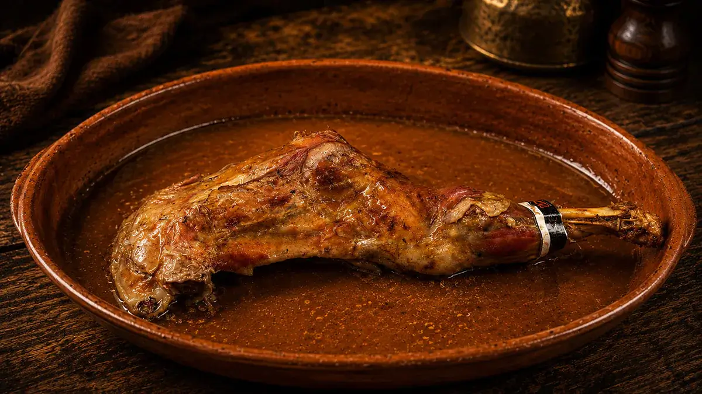
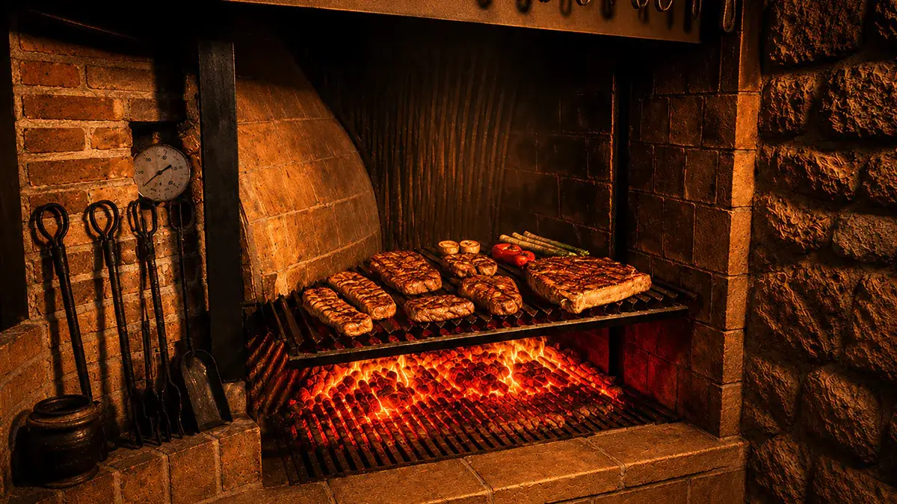
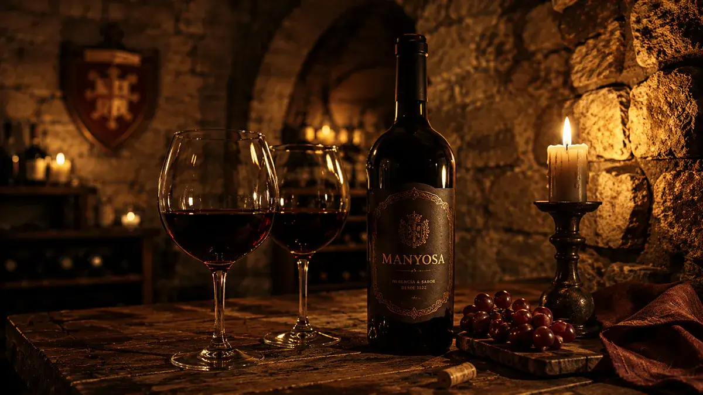
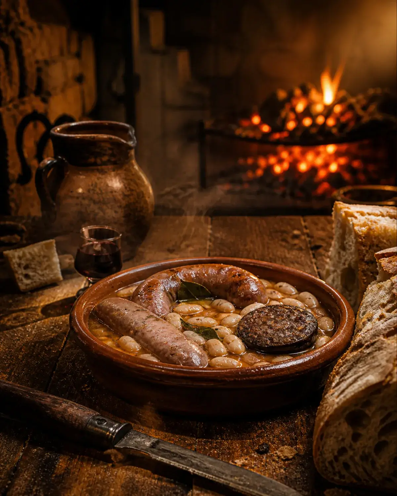
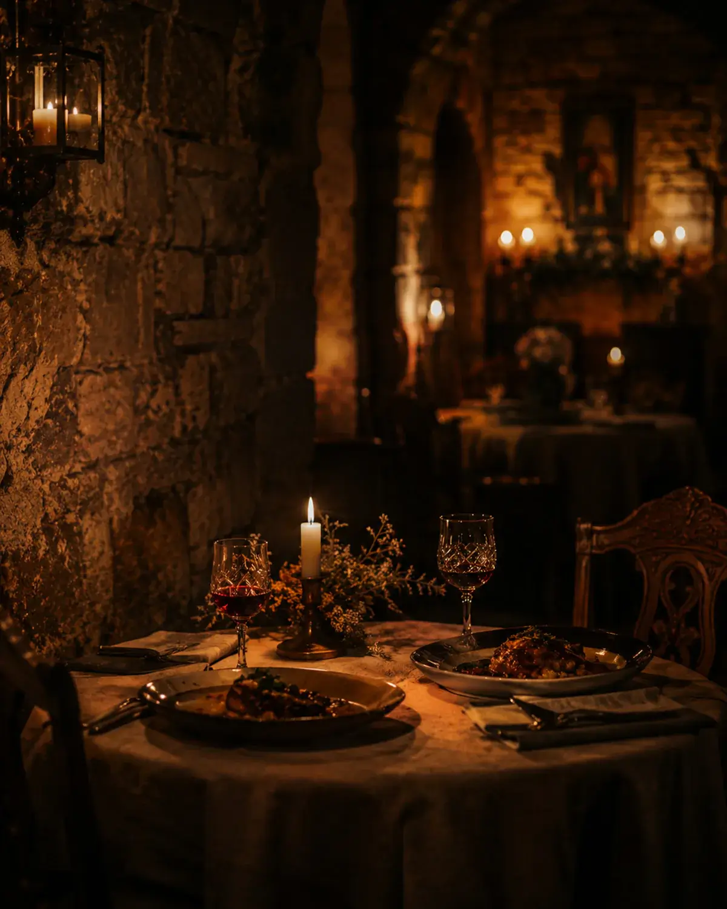

Lechazo al horno
Cocinado lentamente para preservar el sabor más auténtico de la tradición.
DESCUBRIR →Fuego, piedra y cocina auténtica concebida para experiencias gastronómicas sin prisa.
La Manyosa une gastronomía emocional, brasas, horno de leña y atmósfera medieval en una experiencia concebida para compartir en pareja o disfrutar sin prisa en el interior de una auténtica fortaleza.

Cocinado lentamente para preservar el sabor más auténtico de la tradición.
DESCUBRIR →
Fuego abierto, cortes seleccionados y cocina contundente en una atmósfera cálida.
VER BRASAS →
Tradición catalana servida sin prisas. Platos de cuchara, brasas y recetas contundentes concebidas para recuperar la esencia de los auténticos esmorzars.
DESCUBRIR EXPERIENCIA
Una experiencia donde gastronomía, intimidad y fortaleza medieval se unen para crear una estancia difícil de olvidar.
DESCUBRIR LA EXPERIENCIA